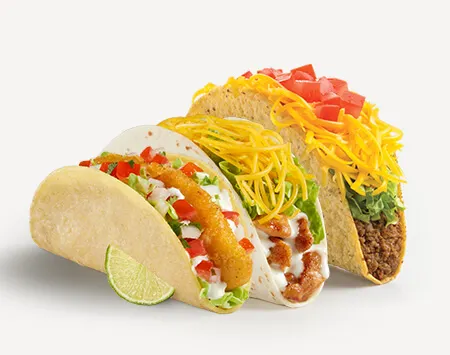

Tacos
Tacos are a popular Mexican dish made with a folded or rolled tortilla filled with a variety of ingredients.
The most common fillings include seasoned meat like beef, chicken, or pork, along with toppings like lettuce, cheese, salsa, and guacamole.
Tacos can be made with soft corn or flour tortillas, or crispy hard shells. They're easy to make, fun to eat, and can be customized however you like.
Whether served as street food or at home, tacos are a tasty, quick meal loved by many.
Ingredients
- 1 lb ground beef
- 1 packet taco seasoning
- 8 taco shells
- 1 cup shredded lettuce
- 1 cup diced tomatoes
- 1 cup shredded cheese
- 1/2 cup sour cream
Instructions:
- In a skillet, cook the ground beef over medium heat until browned.
- Add the taco seasoning and water according to the package instructions. Simmer for 5 minutes.
- While the beef is cooking, warm the taco shells in the oven according to package instructions.
- Fill each taco shell with the seasoned beef, then top with lettuce, tomatoes, cheese, and sour cream.
- Serve immediately and enjoy!